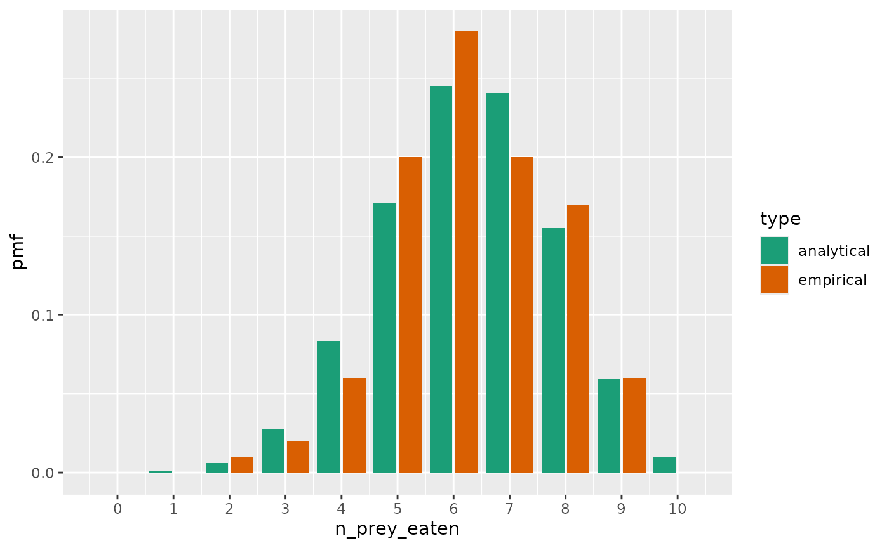

Stochastic in the likelihood
stochasticity_in_likelihood.Rmd
library(frbayes)
#>
#> Attaching package: 'frbayes'
#> The following object is masked from 'package:stats':
#>
#> simulate
library(ggplot2)
library(purrr)
library(dplyr)
#>
#> Attaching package: 'dplyr'
#> The following objects are masked from 'package:stats':
#>
#> filter, lag
#> The following objects are masked from 'package:base':
#>
#> intersect, setdiff, setequal, union
library(tidyr)In this vignette, we explain how this package calculates the likelihood and why this leads to stochasticity in its value.
Chemical reaction equations
In functional response-type experiments, a number of prey are initially colocated with the predators. Over time, the predators eat the prey and they diminish. Often, the numbers of prey in such experiments are relatively few, meaning that stochasticity is important, and this package explicitly models this using chemical reaction equations.
The type of CRE this package assumes is of the form:
where means the number of prey remaining at a point in time, and the rate of this reaction is given by some function, , where is (potentially a vector of) parameter values.
This type of model is inherently stochastic meaning that even when the parameter values are fixed, it is likely that each time the model is run, the results will differ.
The simplest possible model for is:
where dictates the speed at which prey are eaten. This type of model is known as a stochastic degradation model.
To illustrate how this model works, we can simulate from it. We assume an arbitrary parameter value: and perform a simulation where we suppose there are initially 10 prey.
# stochastic degradation parameters
true_parameters <- list(rate=0.2)
# stochastic simulation
df_single_replicate <- simulate_trajectory(
n_prey_initial = 10,
time_max = 20, # time at which to stop recording if still some prey remaining
model = model_constant_rate(),
parameters = true_parameters
)
# plot
df_single_replicate %>%
ggplot(aes(x=time, y=n_prey_eaten)) +
geom_step() +
scale_y_continuous(n.breaks = 10) +
scale_x_continuous(limits = c(0, 20))Because this model is stochastic, each time it is run, a different trajectory can occur. We now simulate 100 such trajectories.
# convenience function
simulate_many_trajectories <- function(
n_trajectories,
n_prey_initial,
time_max,
model,
parameters){
for(i in 1:n_trajectories) {
df_single_replicate <- simulate_trajectory(
n_prey_initial = n_prey_initial,
time_max = time_max,
model = model,
parameters = true_parameters
) %>%
dplyr::mutate(trajectory_id=i)
if(i == 1)
df_all_trajectories <- df_single_replicate
else
df_all_trajectories <- df_all_trajectories %>%
dplyr::bind_rows(df_single_replicate)
}
df_all_trajectories
}
# perform simulations
df_all_trajectories <- simulate_many_trajectories(
n_trajectories=100,
n_prey_initial=10,
time_max=10,
model=model_constant_rate(),
parameters=true_parameters
)
# plot
df_all_trajectories %>%
ggplot(aes(x=time,
y=n_prey_eaten,
group=as.factor(trajectory_id))) +
geom_step(alpha=0.5) +
scale_y_continuous(n.breaks = 10) +
scale_x_continuous(limits = c(0, 15))
#> Warning: Removed 19 rows containing missing values or values outside the scale range
#> (`geom_step()`).Calculating probabilities
For CREs, it is generally not possible to write down the probability distribution which describes the data at a point in time. A stochastic degradation model is a rare exception to this. In this case, it is possible to derive such a formula, which describes the number of prey remaining at a given observation time.
By simply substituting , where is the number of prey eaten, we obtain a distribution over the number of prey eaten:
We can plot this distribution at at and the number of initial prey, .
analytical_pmf <- function(n_prey_eaten, n_prey_initial, t, rate) {
exp(-rate * (n_prey_initial - n_prey_eaten) * t) * (
choose(n_prey_initial, n_prey_initial - n_prey_eaten) *
(1 - exp(-rate * t))^n_prey_eaten)
}
# generate pmf values
n_prey_initial <- 10
n_prey_eaten <- 0:10 # all possible values
obs_time <- 5
pmf_values <- analytical_pmf(
n_prey_eaten, n_prey_initial,
obs_time, rate=true_parameters$rate)
# plot
analytical_pmf_df <- dplyr::tibble(
n_prey_eaten,
pmf=pmf_values
) %>%
mutate(type="analytical")
analytical_pmf_df %>%
ggplot(aes(x=n_prey_eaten, y=pmf)) +
geom_col() +
scale_x_continuous(n.breaks = 10)We can compare this distribution with model simulations by a slice through these at .
# plot
df_all_trajectories %>%
ggplot(aes(x=time,
y=n_prey_eaten,
group=as.factor(trajectory_id))) +
geom_step(alpha=0.5) +
scale_y_continuous(n.breaks = 10) +
scale_x_continuous(limits = c(0, 15)) +
geom_vline(xintercept = 5, linetype=2, colour="orange")
#> Warning: Removed 19 rows containing missing values or values outside the scale range
#> (`geom_step()`).Looking at the empirical histogram from this slide, the typical ranges implied by the above analytical distribution, where mostly , are supported by the simulations.
# plot histogram
df_all_trajectories %>%
dplyr::filter(time <= 5) %>%
group_by(trajectory_id) %>%
summarise(n_prey_eaten=last(n_prey_eaten)) %>%
ggplot(aes(x=n_prey_eaten)) +
geom_histogram() +
scale_x_continuous(
n.breaks = 10,
limits=c(0, 10))
#> `stat_bin()` using `bins = 30`. Pick better value with `binwidth`.
#> Warning: Removed 2 rows containing missing values or values outside the scale range
#> (`geom_bar()`).Approximating the probability distribution
The above illustrates a way to approximate the true probability
distribution for CREs: just perform lots of simulations, and use that
empirical distribution in place of the true distribution. This is the
approach which underlies the frbayes package.
When we perform only 100 trajectories, the empirical distribution is only a rough approximation to the true distribution.
create_empirical_pmf <- function(
df_all_trajectories,
time_obs) {
# all possible numbers of prey remaining
df_all <- dplyr::tibble(n_prey_eaten = 0:n_prey_initial)
# empirical distribution
df_all_trajectories %>%
dplyr::filter(time <= time_obs) %>%
group_by(trajectory_id) %>%
summarise(n_prey_eaten=last(n_prey_eaten)) %>%
group_by(n_prey_eaten) %>%
count() %>%
right_join(df_all, by="n_prey_eaten") %>%
tidyr::replace_na(list(n = 0)) %>%
arrange(n_prey_eaten) %>%
ungroup() %>%
mutate(pmf=n/sum(n)) %>%
select(-n)
}
# plot
create_empirical_pmf(df_all_trajectories, 5) %>%
mutate(type="empirical") %>%
bind_rows(analytical_pmf_df) %>%
ggplot(aes(x=n_prey_eaten, y=pmf)) +
geom_col(aes(fill=type), position = position_dodge2()) +
scale_x_continuous(n.breaks = 10) +
scale_fill_brewer(palette = "Dark2") But if we increase the number of simulations, we generally get a better approximation.
df_all_trajectories <- simulate_many_trajectories(
n_trajectories=1000,
n_prey_initial=10,
time_max=10,
model=model_constant_rate(),
parameters=true_parameters
)
# plot
create_empirical_pmf(df_all_trajectories, 5) %>%
mutate(type="empirical") %>%
bind_rows(analytical_pmf_df) %>%
ggplot(aes(x=n_prey_eaten, y=pmf)) +
geom_col(aes(fill=type), position = position_dodge2()) +
scale_x_continuous(n.breaks = 10) +
scale_fill_brewer(palette = "Dark2")Conclusion
The functional response models that frbayes considers
are examples of chemical reaction equation models (CREs). For all bar a
few isolated cases, it is not possible to write down the probability
distribution describing the data which these simulations generate.
Here, using one of the rare instances where it is in fact possible, we show that performing many simulations can relatively accurately determine the true probability distribution.
This simulation-based approach to determining probability
distribution is what underlies the log_probability function
in frbayes. This means that when seeking a maximum
likelihood estimate, for each value of the parameter, a new set of
simulations is peformed with which to approximate probability
distribution of these models. We’ve shown here that, generally, as the
number of such simulations increases, the accuracy of the reconstructed
probability distributions improves.
When using frbayes, we suggest using relatively large
numbers of such simulation replicates in order to increase the accuracy
of the likelihood calculations. This increased accuracy can
substantially improve the efficiency and reliability of algorithms
seeking to obtain either the maximum likelihood parameter values or the
posterior distribution in Bayesian inference.